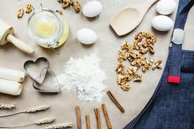

The practice of baking gives me far more than recreational interest since it both sustains my creativity while relieving stress and allows me to make others happy. Watching flour combine with sugar and butter during mixing reveals an enchanting process which creates delicious outcomes. Measurements along with mixture preparation and decoration produce a therapeutic effect that lets me lose myself in the present.
The freedom to create endlessly represents what I enjoy most about baking. Every baking session offers me the chance to learn through creative experimentation and gives opportunities to refine both new and traditional recipes. Perfect outcomes rarely occur during baking so students must learn through experience how patience and precision enhance their skills.
Baking serves as a fundamental force which unites people during and after their cooking sessions. Preparing treats at home for close ones adds additional joy to the entire baking process. Making something that cheers up friends and family creates one of the most authentic positive feelings. I make food through baking because it forms cherished memories while allowing me to explore creativity as well as savor joyful experiences that stem from every treat I bake.
